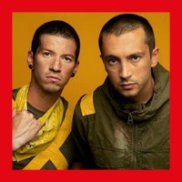

twenty øne piløts is an American musical duo from Columbus, Ohio. The band was formed in 2009 by lead vocalist Tyler Joseph along with Nick Thomas and Chris Salih, both of whom left in 2011. Since their departure, the line-up has consisted of Joseph and drummer Josh Dun. The duo is best known for the singles "Stressed Out", "Ride", and "Heathens". The group received a Grammy Award for Best Pop Duo/Group Performance at the 59th Annual Grammy Awards for "Stressed Out". The band independently released two albums, Twenty One Pilots (2009) and Regional at Best (2011), before being signed by record label Fueled by Ramen in 2012. Their label debut, Vessel, was released in 2013. The duo achieved breakthrough success with their fourth album, Blurryface (2015), which produced the successful singles "Stressed Out" and "Ride" and became the first album in history on which every track received at least a gold certification from the Recording Industry Association of America. The release of the single "Heathens" also made the group the first alternative artist to have two concurrent top ten singles in the United States. The duo's fifth studio album, Trench, was released on October 5, 2018.